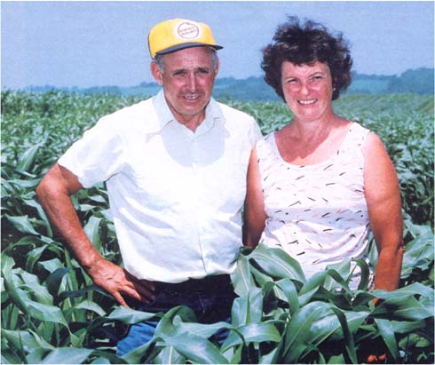
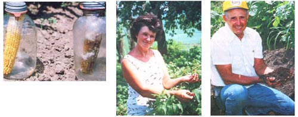

When you stop to consider that everyone has to make do with the same 24 hours each day, it's difficult to imagine just how Ralph and Rita Engelken manage to accomplish as much as they do. This energetic (and highly personable) couple are parents to 11, grandparents to 11, authors of one meticulously researched book, sought-after speakers, dedicated churchgoers, and concerned citizens who are intensely committed to the activities of their Greeley, Iowa farm community . . . and to helping solve the agricultural problems facing the United States and the world. Oh yes, and in their spare time, they run a 500-acre organic arm . . . raising beef cattle, horses, chickens, guineas, dogs, and cats. hey butcher their own meat, make their own dairy products (from the milky milk cow), and are "96% food self-sufficient"!
And as if all that weren't enough, the Engelkens also spend consider- time demonstrating to visitors-such as MOTHER's Associate it or Carrie Kent and Photographer lack Green-just how and why it natural farm program operates as successfully as it does.
On a sunny day early in July-with the air carrying the first hint of summer heat wave that was to follow-Ralph and Rita spoke an- at their home, Barrington Hall Farm, about farming, health, ;I, chemicals, the future, and the struggle between agripolitics and the epical American farmer. In the course of the five-hour conversation, Ralph accurately predicted the midwestern crop failures of 1983 . . . , the dismal repercussions of the government's payment-in-kind PIK) program, both of which were just beginning to make headlines at the time this interview went to press. We hope you'll be interested in hat else these agricultural visionaries have to say..
PLOWBOY: Ralph and Rita, how in the world did you two happen become so involved in organic farming way back in 1958 . . . well before the concept became popularized, or even understood?
RALPH: Well, we were really reacting to the health problems that were then afflicting both our family and our livestock. You see, for ten years prior to our buying this farm-which we did in 1958, I'd not only been spraying my cornfields with the herbicide 2,4-D . . . I was hiring myself out to treat other people's land, as well. I probably sprayed an average of 1,000 to 2,000 acres each year . . . handling the chemicals every day for four or five months at a time. I inhaled the sprays as I applied them, of course, and the fumes permeated my clothing and skin and eventually entered my bloodstream.
PLOWBOY: I can understand how all that exposure could adversely affect you . . . but why did the rest of your family also suffer ill effects?
RALPH: There were many reasons. For instance, whenever my clothes were laundered, the poisons would be spread into everyone else's clothing, too. And my older sons were directly exposed to 2,4-D because one of their nightly chores was to fill the sprayer for the next day.
PLOWBOY: What were your symptoms?
RALPH: Oh, we all suffered from dizziness and fatigue . . . but I guess the most painful effects were the rashes.
RITA: The children and I would break out at our stress points, places on the body where there's a natural crease or friction-such as between the fingers, under the arms, and behind the ears. One of our daughters developed a bad rash on her chin and underneath her eyes, and one of our boys had severe problems with swelling in his knees and knuckles.
RALPH: And Rita had an open sore the size of a silver dollar on her leg that refused to heal. I had the least visible signs of illness, but I itched like the dickens inside. It was a horrible feeling that made just plain living pure torture at times. It took me 11 years to totally rid myself of that inner itch.
PLOWBOY: And exactly how did you finally heal yourselves and your family?
RALPH: Well, after we'd spent a couple hundred thousand dollars on medical bills, one of the five doctors we'd been seeing regularly concluded that the problem stemmed from an allergy to something we'd been coming into contact with. However, we finally made the connection to the spraying. And soon afterward, we purchased this place - at that time it was 240 acres rather than the 500 we currently own - with the intent of farming it on a completely natural program.
RITA: Our plan extended beyond merely making do without chemical fertilizers and herbicides, though. We were also determined to eat a healthful diet. You see, we had learned that the corpuscles in our blood had begun attacking one another. The problem was similar to leukemia, which is a form of cancer. Now I'm sure you know that cancer is terribly widespread today, and I believe the reason for this "epidemic" is that people are eating food with little or no nutritive value. Our bodies were designed with good antibodies that can fight of illnesses such as cancer, but I think much of humanity has reached the depletion point, and that many people just don't have those antibodies anymore.
And I firmly believe that the problem can be traced back to the food value of what folks have been eating. I know that our own family had reached the point where we were consuming everything out of a box or a can . . . primarily because I never felt good enough to grow and prepare our own food. And we weren't receiving enough nutrients from those processed meals to build up our health. By not eating food with life in it, we were preventing ourselves from getting well.
PLOWBOY: But don't you think there's a growing belief in consuming garden-fresh vegetables and fruits? Don't you agree that more folks are trying to maintain healthful diets?
RITA: Sure. Unfortunately, though, even many of the fresh fruits and vegetables available are lacking in nutritive value . . . all because of the poor quality of the soil they're grown in. Our country's soil is badly depleted of all the elements necessary to grow good food. And if the soil isn't healthy, then nothing it produces, nor anything that eats off it, is going to be healthful, or healthy, either.
PLOWBOY: So you opted to buy this farm and improve the soil in order to raise good food that would, in turn, improve your health. But how did you learn to do that? Were you already fairly knowledgeable about organic farming techniques?
RALPH: No, we didn't know much about wholistic farming when we bought this place. And it was difficult to get any information about the subject. What's more, all of the information we did find was so vague that we basically had to learn everything through trial and error anyway.
I must say, however, that we did receive a lot of valuable advice and encouragement from our parish priest, Father White. He was a farm boy at heart, and always kept a large vegetable garden behind the church. He was also outspokenly pro-organic, and his motto always was "Work with nature, and nature works for you." Really, he was 20 years ahead of his time. He kept our family going during those first few years . . . when there was a lot to be discouraged about.
PLOWBOY: You may not have been familiar with natural agricultural techniques, but you were experienced farmers, weren't you? You both grew up in the country, right?
RALPH: That's right. Rita and I both were born and reared on farms. In fact, we grew up about 12 miles apart. Each of us came from a family of eight children, and we spent our childhoods helping out on the farm.
RITA: Actually, although my folks were farmers, they never owned the land they worked. Instead, they always rented on shares. We didn't have electricity until shortly before I met Ralph in my late teens. We never had a bathroom . . . or even any running water.
The only way that anyone can make a decent living at farming today is by finding ways to keep the fixed costs down. And the best way to keep fixed costs low is to avoid putting yourself at the mercy of those petrochemical giants.
My parents farmed for 35 years-and raised eight children-without any of the modern conveniences. We turned the cream separator by hand . . . did everything by hand, really. And the whole place ran on family labor. Back in those days, you never left home unless you had a darn good reason. In fact, neither Ralph nor I made it past the eighth grade . . . simply because we were needed at home.
RALPH: My dad did own his own farm, but my brothers and I pretty much ran it. My mother died when I was nine years old, you see, and my father was sick much of the time, so we eight kids kept the household and farmed our 80 acres, and then we also worked out on other farms to earn extra money. I think I can honestly say that I've been farming full-time since I was 13.
PLOWBOY: You were really born into it.
RALPH: That's right. I have vivid memories of slogging along behind a walking plow . . . we disked our land with horses back then. We also raised hogs, chickens, and dairy cows. During one particular summer I milked 29 cows by hand, morning and night.
PLOWBOY: So you both had years of farming experience behind you, coupled with a dire need to live without continued exposure to such chemicals as 2,4-D. What methods did you use to make the transition?
RALPH: That first year-on the advice of Father White-we tried a bagged natural fertilizer called Super Gro, which we broadcast a 50 pounds to the acre. We also broadcast cottonseed meal to counteract a serious nitrogen deficiency in the soil. Believe it or not, we cultivated our cornfields five times that first season to try to stay ahead of the weeds, but our fields still looked awfully ragged Weeds were probably our biggest problem during those first fey years.
PLOWBOY: How was your first harvest?
RALPH: Nothing to write home about! Our best acres yielded 2( bushels of corn, and our worst ground ran as low as 12 bushels u the acre. Our three hay cuttings were downright poor, too . . . barely adequate to sustain our dairy operation. But the health of our family had improved remarkably as a result of our not spraying, and just feeling better gave us enough incentive to go on.
PLOWBOY: How long did it take you to start really seeing the positive results of farming organically?
RALPH: It was about five years before our yields began to compare favorably with those of our neighbors who were farming conventionally.
During that period, I switched from cottonseed to blood meal, because at the time it was a less expensive source of natural nitrogen. Some seasons we'd also broadcast as much as 250 pounds of Super Gro to the acre . . . and I kept hauling load after load of manure out to the fields, spreading as much as ten tons per acre each year.
PLOWBOY: You weren't composting then?
RALPH: No, and I wish that we had been. It's far wiser to make compost, and then supplement that with other natural elements that you can purchase in bulk, than it is to rely on a bagged organic fertilizer mix. Not only are those products overly expensive, but they also usually are not mixed in the correct proportions to satisfy specific soil needs. I now rely on a soil audit and annual soil tests to determine what organic additives are actually needed. Also, composting would have helped relieve our weed problem, because the heat generated during the compost
process destroys most of the weed seeds present in the manure.
PLOWBOY: Did you ever come close to giving up?
RALPH: Oh yeah. Those first few years were really discouraging. I've already mentioned the weed problems we experienced. It took us five years to find out that weeds are caused primarily by imbalances in the soil. Back then, no tests were available for evaluating magnesium /calcium ratios and the levels of other minerals . . . or at least we weren't aware of any.
RITA: We find that people who begin our program are most likely to quit during the second year. If we can just convince such folks to stick with it another season, by then they'll be able to notice an improvement in the tilt of the soil.
PLOWBOY: Have you converted many of your neighbors? Or do they think you're way off the beam?
RALPH: When we started farming organically, the practice wasn't very well accepted. And, admittedly, at first our results didn't look all that great, either. More often than not, our crops just weren't comparable with those of our neighbors . . . and we did hear a few nasty stories that dribbled back through the grapevine. However, we haven't really gotten the sort of static from conventional farmers that most folks presume we have. In fact, I'd say we've been accepted fairly well. One neighbor stopped by last year and said, "Well, Ralph, I'm doing what you're doing. I'm not spending any money on chemicals this year, because it's been costing me $130 an acre, and that's just way too much." So he did without, and he did all right. Of course, your next door neighbors usually aren't the ones to come and ask if they can copy everything you're doing . . . especially when so many of them have condemned your ideas in the past. People don't do turnabouts that way.
PLOWBOY: In your book, The Art of Natural Farming & Gardening, you mention that, after World War II, our agricultural system switched its emphasis from feeding the soil to feeding the plant. How or why do you think this happened?
RALPH: Well, the end of that war marked the beginning of the petrochemical age, since synthesized inputs could then be produced at two cost and cruise& onto the farm. people tried it feeding then crops with these products, and the plants looked fairly good, too. In the beginning, of course, a farmer would use only 50 to 100 pounds total . . . and the fertilizers really seemed to spur production. They did, too, but only because the farmer was stimulating a natural soil that was rich in organic elements. In effect, the chemicals gave the nutrients already present in the
ground an extra push.
But, after the first few pushes, the soil became imbalanced . . . and weed problems developed. The same chemical firms then began to produce herbicides to kill those weeds. And that, in turn, weakened the crops to the point that insects began to be a problem, so the petrochemical giants again stepped in . . . developing and promoting pesticides. Finally, the combination of all of those products effectively destroyed the microorganisms in the soil. Today, most of this country's soil is dead, and the crops are being fed synthetically by additives that cost more and more each year. Most young farmers are led to believe they have to use herbicides and insecticides and chemical fertilizers . . . and as a result they're often broke before their first harvest. What's more, the best that such farmers can hope for is a sick crop that isn't nutritious enough to keep either animals or humans healthy.
The only way that anyone can make a decent living at farming today is by finding ways to keep the fixed costs down. And the best way to keep
fixed costs low is to avoid putting yourself at the mercy of those petrochemical giants.
Do you know that it now takes ten calories of energy to produce each calorie of food? That's like spending ten dollars to make one. It's a fast
way to go broke.
PLOWBOY: You also noted in your book that it takes two bushels of Iowa topsoil to produce one bushel of corn. That's a horrifying statistic!
RALPH: Well, those figures come from the USDA, and I think they're actually overly optimistic! In my opinion, if you took every factor into account, the figure would probably run closer to three to five bushels. So you see, in a sense, every time we ship a bushel of grain abroad, we're also giving away at least two bushels of our topsoil.
Not long ago, I had a visit from three soil conservationists who had been hired by our county for some reason, and one of them noticed that my soil was a lot darker than that of my neighbors. He asked what I was doing differently, and I replied that I farmed naturally . . . which meant that we didn't use products such as anhydrous ammonia, because it bleaches out the soil and kills the microorganisms. Well, he was just fascinated.
It seems all three of these people had Ph.D.'s in soil science, and none of them had ever heard of such a thing before. But to get back to the point, as long as you've got dead soil, it's going to erode . . . and as long as you use chemicals, your soil is going to be dead.
PLOWBOY: Is there any possible way to gain topsoil? Or is simply preserving the remaining six inches the best we can hope to do?
RALPH: Oh, you can build it back up. In one year we actually gained three-tenths inch, and I feel pretty good about that . . . since most sources say it takes 50 years to gain an inch of topsoil. The number one factor is earthworms. If you can remove all the toxicity from the soil and replenish the microorganisms, and then if you can get your earthworm population up to about five million per acre . . .
PLOWBOY: Five million earthworms per acre?
RALPH: It can be done within two years. And five million earthworms will generate 96 pounds of topsoil, and they'll often go down 28 to 30 feet to make it. That's where America's gold is. People complain that our economy is in a mess, and it is, but few folks realize that we've got all the wealth we need right beneath our feet. We've got all the necessary minerals and elements-particularly in our midwestern states below us.
But that "gold" has to be made available to the plants, and that can't be accomplished without earthworms and microorganisms. The worms bring nutrients to the top, but all the various bacteria and fungi have to break them down to the state at which plants can take them up. Let's suppose the average farmer spends $120 per acre on products from the chemical people each year. If he or she spent only half that amount on making compost and stocking earthworms and ladybugs, that person would be improving the soil and saving $60 an acre. Let's also suppose that the typical farmer has 100 tillable acres . . . then we're talking about a saving of $6,000. And that's practically net profit. To that you can add the facts that the farmer is rebuilding the soil and producing a higher-quality product!
And if the same farmer did save $6,000, chances are that he or she would turn around and spend at least half of it to update the farm's equipment, or perhaps to buy other merchandise. Well, that's going to help pick up the whole economy.
Therefore, in my opinion at least, it'd be awfully difficult for anyone to criticize our natural farming program. I'm talking about saving the farmer an average of $5,000 to $15,000 per year, most of which will go back into circulation. Doesn't that sound reasonable? How can anyone complain about something like that?
PLOWBOY: When you began reconditioning your soil more than 20 years ago, you used a lot of cottonseed and blood meal . . . but you've recently stated that even some natural products are becoming almost prohibitively expensive. What do you recommend for people who are starting out today? Do you think compost alone would do the trick?
RALPH: Well, no. Most soils are so poor now that straight composting wouldn't work quickly enough to be the sole solution. We generally recommend the application of beet pulp as an inexpensive source of natural nitrogen.
PLOWBOY: Beet pulp?
RALPH: Yes. It's made from the tops of sugar beets. We also suggest fish emulsion shipped in from Canada . . . and, of course, blood meal is still effective.
PLOWBOY: Now that you've spent 25 years rebuilding and reconditioning your soil, are you able to maintain it simply by spreading compost?
RALPH: Basically, yes. Occasionally, we do see an increase in the magnesium level, and that disturbs me, so I'll generally spread a little lime each year. Even so, I probably use only about 50 pounds of lime . . . which is minimal compared with the amount most other farmers use. Then too, once in a while my soil will need a bit of natural phosphate, so I'll work that in . . . but we haven't had to add any potash for probably 20 years. You see, I feel that annual soil tests are invaluable. I make spot checks in every field each year, and then "doctor" accordingly.
PLOWBOY: When do you test your soil?
RALPH: Usually in June or July. Early summer weather conditions give us the best readings. Then if we discover we need lime or some other additive, we can figure how much should go on what field, and just add it to the appropriate compost pile.
PLOWBOY: You add lime to your compost?
RALPH: Yes, we spread everything together in one operation.
PLOWBOY: Do you advocate the use of cover crops or green manure?
RALPH: Only for farmers who aren't able to employ composting.
PLOWBOY: How do you prepare your compost?
RALPH: Well, we make it only during the summer months, when the sun and ground conditions allow the bacteria to work most effectively.
We pile all our accumulated barnyard manure, along with any crop residues we have on hand, into long rows at the edges of our fields. The whole process usually takes about three weeks.
RITA: Often cash grain farmers will ask us what they can use to make compost, since they don't have a source of manure. We tell them that decomposed cornstalks can produce as good a compost as any barnyard manure, especially if you use the BD starter.
PLOWBOY: What is BD starter?
RITA: It's an inoculant that has 55 strains of bacteria in it . . . we've found that it can decompose just about anything. (EDITOR'S NOTE: For more information about biodynamic compost starter, see page 62 of MOTHER NO. 75.1
PLOWBOY: Do you turn-or aerate-your compost?
RALPH: Yes, we've developed a machine to do that job. Generally, we use that implement four times during a pile's three-week "incubation" period. Even when the compost looks like it's completely finished, we still go through and give it that one extra stir.
It's kind of amazing to me that-within a period of three weeks barnyard manure can be turned into soil that has 13 trillion beneficial bacteria in every handful. You know, a lot of folks ask me why they should go to the trouble of composting, and in return I ask them if they know of any other way to increase the number of these beneficial organisms.
PLOWBOY: Not only are you dedicated to the concept of composting, but you're also a fervent believer in using the chisel plow as the correct way to till your soil, right?
RALPH: Oh yes, definitely. The chisel plow is really the only machine that will blend residue properly and allow the bacteria to help decompose the matter.
PLOWBOY: Now chiseling-in contrast to the moldboard method, which flips the earth up and over-just sort of digs into the soil without overturning it?
RALPH: Well, yes . . . but I prefer to compare the chisel plow to a spike that's pulled through the ground. It does bring a certain amount of virgin soil to the top, but, more important, it blends the earth and crop residues together . . . making that organic material easier for the bacteria, and ultimately the plants, to digest. I'm very much against the use of the conventional moldboard plow, because it tends to put the subsoil on top and the topsoil below, which is the exact opposite of nature's intent. The moldboard also buries the retained organic matter and microorganisms too deeply in the soil to be effective. The aerobic bacteria suddenly find themselves in a hostile anaerobic environment . . . and the anaerobic bacteria find . . . few folks realize that we've got all the wealth we need right beneath our feet.
themselves on top, surrounded by oxygen they can't use. I also believe the moldboard promotes erosion, whereas chiseling leaves enough
stubble on top to discourage it.
PLOWBOY: Why till at all? Isn't there a trend toward no-till natural farming?
RALPH: Many farmers who try the no-till approach find, after a few years, that it really doesn't work very well. Their soil hardens, and they end up relying on herbicides and pesticides to combat weeds and insects. [EDITOR'S NOTE: We'll discuss this problem further in our next issue.] Soil is composed of air, water, and organic matter. If you eliminate any of the three, you're going to have problems. And that's exactly what no-till does. It prevents oxygen from getting into the soil.
PLOWBOY: Obviously, then, composting and chisel plowing are both fundamental to your natural farming program. What else would you say is
vital to your success?
RALPH: The fact that we follow a six-year crop rotation system. On any given field, we'll generally plant corn for two years, then sow oats for one year, and then follow that with three plantings of alfalfa. We do have one field where we've grown corn continuously for 15 years, but that's really just for research.
PLOWBOY: Yes, I wanted to ask you about that. You maintain that crop rotation is necessary for the health and life of your soil, and yet you've
demonstrated that, with proper soil treatment, it's possible to continually grow corn on the same acreage with few ill effects.
RALPH: That's true, but we're doing it because I can't go out and tell these folks who rely on their cash corn crop year after year after year that they suddenly can't do that anymore. But if we can say that it is possible, and here's how to do it right, then those farmers may want to try natural techniques, too. Better still, if young farmers can get into-and maintain-a rotation schedule, and then keep some livestock to help generate a second source of income, they won't ever have to put all of their eggs in one proverbial basket.
PLOWBOY: What kinds of animals do you keep? I noticed your chickens . . .
RALPH: Yes, we have good chickens. And we did raise hogs, but now we concentrate most of our efforts on the back grounding program for
beef cattle, since our whole crop operation here is designed for animals that eat roughage.
PLOWBOY: Could you explain the back grounding program?
RALPH: Backgrounding cattle refers to a process whereby we purchase young animals that have just been weaned and take them up to a weight at which the feedlot owners will buy them. The feedlot operators then bring the cattle up to a marketable weight. It's a risky business to be in, because cattle, at the age we acquire them; are very susceptible to illness and disease. Yet we've been able to succeed at this program . . . primarily because of the quality of our feed. The feed we grow keeps the stock healthy and allows them to quickly recover from the emotional and physical trauma of leaving their mothers and being transported by truck over a long distance.
PLOWBOY: Let's see if I've got it right . . . your farm operates like this: You've got 387 tillable acres that are rotated to give you alfalfa, oats, and corn. These, in turn, are mixed and fed to cattle, which are then sold for a profit. The cattle supply you with manure that you compost to keep your soil alive and productive. Do you have any other techniques that you feel help you farm your land successfully?
RITA: Well, we tend to plant later than conventional farmers do.
RALPH: Yes, we do, with the exception of our oats. We're probably the first ones around here to sow oats. But corn in particular . . . there's an old saying that the leaves on the oak trees should be as big as a squirrel's ear before you plant corn. You've probably heard that before. squirrel's earsquirrel's earGenerally, in this area, the leaves are larger than a squirrel's ear by the eighth or tenth of May, which are our usual planting dates. However, this year the leaves weren't even visible yet at the beginning of May, and I said, "Well, if we go according to nature, we shouldn't be out in the fields ..."
RITA: But when it was getting toward the middle of May . . .
RALPH: We got anxious and we went out there, when the ground was too wet and the temperature wasn't right, and we planted anyway. Then we sowed some more corn on the 28th of May-two weeks later-and that crop is way ahead of the first planting. So I guess nature was right.
PLOWBOY: She usually is.
RALPH: And even though I knew that, I was still doubtful. That's why I understand people who are hesitant about going into organic farming . . .
sometimes you really don't understand it. But you've got to trust that it'll work out.
PLOWBOY: So you've got almanacs and trees to tell you when to plant. What, if anything, tells you when to harvest?
RALPH: That's where human technology plays a part. I rely upon a valuable tool called a refractometer to tell me when to harvest my crops. These gauges are used in soup factories-or by other food canning operations-that need to state the dextrose content of their Product with accuracy. We always test our alfalfa and our corn for their natural sugar content before we cut . . . because the higher the sugar content, the greater the protein value of the foods.
For example, on each of the three Sundays before we cut our hay last month, I went around to all of my neighbors' fields and took readings of their alfalfa plants and various legumes for comparison purposes. The first Sunday, our fields gave us a 6 reading, but the most I could get from anybody else's was a 3. Actually, the majority of the readings ranged from 1 to 1-1/2. A week later, the 1-112 fields were still holding at 1-1/2 . . .the 3 field was up to 4 . . . and our alfalfa had risen to 12. When we finally decided to cut, the sugar content of our hay was 19, while most of the others still gave readings in the 3 to 4 range. Those fields had all been farmed with chemicals . . . although we did test one plot that hadn't been treated with chemicals for seven years, and I got a 9 reading from that crop. Anyway, we harvest when we feel the sugar content has peaked.
And the quality is excellent. The people who purchase our excess hay report that their livestock will eat every morsel of it . . . and that dairy cattle increase their milk output. In my own operation, I can get one pound of weight gain from seven pounds of our feed, whereas it takes as much as 19 pounds of the 1.5-reading hay to produce a one-pound gain in a calf.
Most beef farmers worry about how to increase the protein content of their feed . . . but we're actually concerned about ways to bring ours down.
We allow our ground ear corn and oat silage to become fairly well matured before we mix our feed, in order to get our 22% to 25% protein hay down to a suitable 12% to 13% for the cattle.
PLOWBOY: So there's an economic advantage, as well.
RALPH: That's right. There was a man here last fall who had developed a machine similar to the refractometer . . . and he traveled about 70 miles to take readings on 20 different cornfields. He came back to our farm five different times. It seems he obtained a 17 reading from our cornstalks, and the best he could get anywhere else was a 2.
PLOWBOY: The increased sweetness of the corn means more protein?
RALPH: More digestible protein. So the refractometer is a very useful tool. Without it, we might harvest our crops three or four days too soon and possibly lose half of the feed value. And, in order to maintain that excellent food value, we store our feed in large, airtight Harvestores.
RITA: The same holds true for garden vegetables, too. As the soil is sweetened with nutrients and microorganisms, it'll grow sweeter foods with greater protein value. <
strong>PLOWBOY: Do your root crops store better, then, because of their higher sugar content?
RITA: Yes. In fact, I never have to buy potatoes, and I never buy lettuce or cabbage. Our 1982 potato crop lasted almost a full year. We ate stored Chinese cabbage until the first of May. I kept kohlrabi in my refrigerator until April. Why, I even used my own carrots until the end of May.
PLOWBOY: Do you ever find reason to can any of your produce?
RITA: Sure we do. There are certain things we prefer canned, such as our green beans. But we simply store root vegetables, like carrots and potatoes, in an unheated section of our cellar, and they keep very well.
You know, some of my friends will complain that they dig up their carrots at the same time I do and store them in a tub just as I do, and yet theirs will be all mushy and rotten in a month's time. They think their carrots look good when they dig them up, and they do, but my friends don't understand that their produce just doesn't have any life in it. The keeping value tells the tale.
PLOWBOY: What steps do you take to discourage pests in your garden?
RITA: I rely primarily on companion planting and natural biological controls such as ladybugs, praying mantises, trichogrammas, and lacewings. These good bugs take care of the pesky ones.
PLOWBOY: What other controls do you use?
RITA: Well, for instance, I plant garlic and onion and other strong scented things-such as marigolds and chrysanthemums-in and around my other plants. The hundreds of purple martins that flock here every year do a good job for me, too. One purple martin will eat its weight in flying insects every day. Another good bug deterrent is simply the health of my plants. I use fish emulsion a lot to add nitrogen. Once a plant is healthy, its sugar content will be so strong that the bugs will leave it alone. They prefer sick plants.
PLOWBOY: The bugs don't want all that protein?
RALPH: No. In fact, we like the theory proposed by Phillip Callahan, an entomologist who maintains that healthy plants send out infrared light at wavelengths that repel damaging insects . . . and-conversely that sick plants send out light at wavelengths that attract crop-damaging bugs.
For example, we've never been bothered by alfalfa weevils, and yet our neighbors across the fence sprayed for them twice in one year and still
couldn't raise a crop.
We now have thousands of ladybugs in our garden, and they take care of our corn borers and aphids. And we've got a good population of lacewings, as well. But I'd say another important aspect of our pest control has something to do with our compost. We've never had cutworm, root worm, or nematode problems-even on our 15-year continuous cornfields-and I think we've only just recently discovered why. I can't
document this yet, but it seems that there's something in our compost that the cutworms and grubs ingest . . . only it seems to cut them to bits when they digest it. Better still, this mystery substance doesn't affect our earthworms. It's hard for me to believe, yet our research is pointing in that direction.
RITA: Someone from Iowa State University called down here one day-years ago-and wanted to know what Ralph was doing about nematodes. Apparently, everyone had a nematode problem that
year, and the university was being deluged with telephone calls from people seeking advice. Well, if those people had had enough earthworms
in their soil, it's unlikely that they'd have had nematode problems. But there isn't a chemical farmer who uses sulfate fertilizer that'll have an
earthworm within six inches of his or her topsoil, and that's the reason for the nematode problem.
PLOWBOY: How do you deal with people who come to you seeking advice on how to turn their farms around?
RALPH: I first ask them to describe their farming practices for the past 5 to 10 years. Then I ask how much they feel they can afford to spend per acre, and what types of crops they're interested in raising. I generally figure that if a farmer is expecting to reach the same level of production that he or she had using chemicals, then that person will need to invest at least half of what he or she spent per acre on such substances . . . only that money will go toward purchasing natural phosphates, potash, and hamates. The more a farmer has spent on chemicals, the more time, effort, and natural additives it's going to take to undo the damage to the soil.
I also advise folks to take soil samples and have them tested, and then hire a soil consultant to advise them. For example, nearly everyone around here has trouble with a high magnesium content, but that can be counteracted with calcium sulfate, which is fairly inexpensive.
PLOWBOY: So the farmer making a transition to organic farming can expect to still have fairly high costs at first, but-with each successive
year-those fixed costs should get smaller rather than larger . . . correct?
RALPH: That's right. The first year is about the peak, coastwise. After that it'll drop drastically. And that's why the natural route is really the only way for beginning farmers to go. Conventional methods involve fixed costs that can be as high as $250 per acre, and those fixed costs can be expected to escalate every year. In fact, chemical-dependent agriculture is causing the slow death of rural America.
We have a story that-we feel-illustrates what's happening to the farmer today. A friend of mine worked for six months in a chemical company as an electrical engineering inspector. At one time, that company's president told our acquaintance that it cost the firm $5.00 a ton to manufacture a certain chemical product. Well, I thought $5.00 was an awfully low figure, but my friend insisted that he had asked several times, and was assured that $5.00 was the average cost per ton. At that point I became curious and did a little checking into their products, and found out these same chemicals were retailing on the market for $150 a ton! Then, just last June, I heard another spokesman for the same firm-on one of our local radio stations. He was being interviewed, and the first question he was asked was "How many tons do you produce in a year?" He replied, "That's simple. Our fiscal year ended only last week, and I've just seen the figure. We manufactured 55 million tons." So you figure it out . . . they've got a $5.00/ton input cost, times 55 million tons, which they're retailing for $150/ton. And who's paying their way? The farmer is! Now why spend that kind of money when you don't have to?
PLOWBOY: Probably because these same chemical companies invest a lot of that huge profit into making sure farmers think they need all of those chemical additives.
RITA: Well, that's certainly true. And, of course, these same agrochemical giants are buying up all the farmland now, too. And that's really frightening. The family farm is being taken out of the picture. ITT, for example, owns a big, big share of our nation's cropland . . . and Prudential Insurance owns millions and millions of acres . . . and then, of course, Dow Chemical and Chevron hold a great deal. Almost every chemical company has a finger in the pie. The investors search the courthouse records to find out which farmers are having difficulty meeting their debts, and then they go in and forcefully buy up these large tracts of land. There's a company in Illinois that owns 3,000 acres right here in our county, and it put the whole works in the PIK program this year. The firm is getting a check for a million dollars for leaving that land idle . . . and do you think that a dime of it will be spent here in our county? Or even to improve that acreage? No, of course not. Instead, the company will use that money to buy up even more land, and to farm it in ways that it never should be farmed.
PLOWBOY: Rita brought up the federal government's payment, or PIK, program. Ralph, what's your opinion of it?
RALPH: I consider it to be nothing more than a food stamp for the cash-crop farmer, and I think it's going to produce some ill effects before this year is over. It was, I think, designed by our government to get money from those farmers who owe the government. It's not really designed to help the farmer. Sure, it'll aid the big farming concerns that are interested only in making "X" many dollars per acre . . . the ones who couldn't
care less what their feed is worth to begin with.
Ironically, though, it's those same large cash-crop farmers that really got us into the two most serious problems agriculture is experiencing
today . . . namely, overproduction and toxicity. The latter is one of the reasons foreign countries don't import more of our grain.
PLOWBOY: Are you saying that the poor-quality food produced by conventional methods of agriculture is affecting our export trade?
RITA: I know it is. We've had people from other countries in our home saying that. We ask them why they don't import our grain, and they reply, "Hey, you clean up your soil and your feed, and then we'll buy." They realize that our grain is all but unusable. But do you ever hear that on TV? The government would never admit that that's why we're not exporting more.
RALPH: We've helped folks from 11 foreign countries who were interested in doing what they could to rebuild their soils. And those lands don't even have the good soil structure or weather conditions that we're blessed with here in the U.S. Furthermore, many Third World countries are realizing how badly their soils have been hurt by all the additives we've exported . . . especially those that we've outlawed for our own use.
RITA: The U.S. started all this chemical mess, and we're also responsible for transmitting 2,4-D and other banned additives to places like South and Central America. But the icing on the cake is that the U.S. now is importing a lot of food that was raised in countries that are using our banned chemicals . . . so we really haven't helped ourselves a bit, and we've hurt a lot of others in the process.
PLOWBOY: Do you think the PIK program will eventually lead to food shortages?
RALPH: Yes, I think we'll see some ramifications in a matter of five or six years. I'm afraid that, by then, there won't be enough grain to feed both livestock and humans . . . and that America's livestock operations will really suffer.
PLOWBOY: Why didn't anyone consider the long-term consequences? Or do officials argue that-even in the long term-this program is beneficial?
RALPH: No, they don't argue that. In fact, a spokesperson for the Department of Agriculture actually told me that the PIK program was conceived as a short-term rescue rather than a long-term solution. That agency is dealing with the American agricultural system on a year by-year basis. But by doing so, it's taking our farming future right away from our young people. The older farmers, like myself, are getting
tired, and we don't intend to work forever. We need young, enthusiastic farmers, but what incentive do they have today?
RITA: Today, more than ever, politics is blind as far as agriculture is concerned. No one seems to acknowledge that farming is the backbone of our country,'and that everything in agriculture comes from the soil. The current administration has actually defrauded the farmer, and there's a lot of controversy-a lot of skepticism about natural farming . . . because the big money is controlled by the chemical advocates, and these same concerns control the land grant colleges and the extension services.
PLOWBOY: Speaking of long-term ramifications . . . how do you envision the state of the art in agriculture by, say, the year 2000?
RALPH: Well, I can envision two different futures. Unless we change our whole economic and agricultural structure in the next six to seven years, by the year 2000 we'll be seeing most of our farmland being homesteaded again. Corporate farming won't pay off-and people will be leaving the cities-and big business will either give away, or sell at minimal cost, a certain number of acres to young farmers. Because when the land is so dead and so poor that it doesn't pay its own way, there'll be no choice but to parcel it out and let individuals try to work it up to a point at which they can live off it.
PLOWBOY: Then what's your other scenario?
RALPH: That we'll be witnessing a tremendous change in our conventional system within the next ten years, and by the year 2000 we could be more prosperous than we've ever been. It's going to go to one extreme or the other, though . . . I don't believe there's an in between.
PLOWBOY: Will the U.S. still be considered the breadbasket of the world? Will we continue to feed the planet?
RALPH: No. I think we'll even see a time-perhaps brief-when we'll be dependent on foreign lands to feed us. It's hard to visualize it, but even now there are other countries that are becoming further advanced than we are.
PLOWBOY: Which ones?
RALPH: Well, for instance, the Third World nations. I think that, in the near future, they'll be producing ten times what they are today. And Canada is steadily becoming more self-sufficient. These are some of the countries we're probably going to depend on. However, the thing that frightens me most is that we could eventually experience a Love Canal situation right here in Iowa. Farmers have probably dumped more modern additives in this state than anywhere else in the world. And we also see the acid rains coming . . . and the sulfur dioxide levels rising from furnaces and cars . . . and there could be a time when all of the food we produce here would be poisoned. It's
something I hate to even think about, but I really feel that these things could be in the making. In fact, some related problems are cropping up right now in our own neighborhood. Have you ever heard about twisted guts in livestock?
PLOWBOY: No, I haven't.
RALPH: Well, to backtrack a little . . . most conventional farmers can no longer raise an adequate hay crop because the pH balance in their soil is so high that all of the natural potash remains locked up and unavailable to the plants. So these farmers apply a heavy dose of commercial potash, which does promote quick growth, but the resultant hay is not what it should be for the animal's digestive tract. The hay actually loosens the animal's stomach muscles. And then when the cow becomes pregnant, the muscles stretch farther than they should and don't tighten up after calving.
The muscles twist all up, and it's generally months before the farmer realizes what's happened. I'd say this phenomenon causes about a 90 percent death rate when it occurs. Two of my friends have had stock hit by it. One had seven deaths in a year, and the other had eight. And that's just the beginning of what's going to eventually happen as a consequence of the soil imbalance.
PLOWBOY: You told me that, by the year 2000, U.S. agriculture could move in one of two directions. Are you optimistic or pessimistic about the
outcome?
RALPH: I'm optimistic. I do think people listen. Folks who want to change are going to change . . . and every day we do see more people turning toward natural farming. The trend is alive today. It's growing. When we look back, we remember that as short a time as two years ago, our whole program seemed like a dead horse some days. But lately . . . why, we've had nine or ten phone calls this morning already. In fact, we're having to turn people away because we just don't have the time and resources to help them all. So the movement is definitely being accepted on a grass-roots level. We can still turn this thing around. And I predict that, by 1986, you're going to be hard-pressed to find someone who'll argue that chemical farming is the way to go!
|
 The two ears of corn shown above were both grown in 1981. The corn on the left came from Ralph's and Rita's organic fields, while the ear on the right was picked from a nearby chemicalized cornfield. The difference in the keeping value, two seasons later, is obvious. |
 |
|